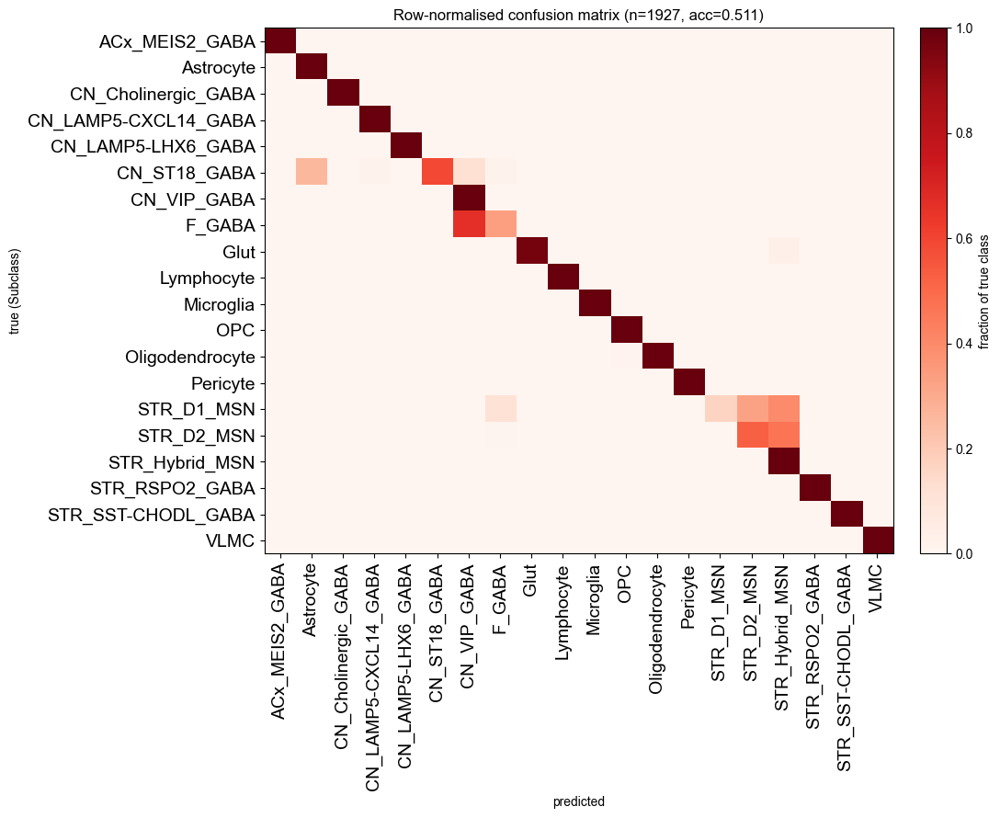
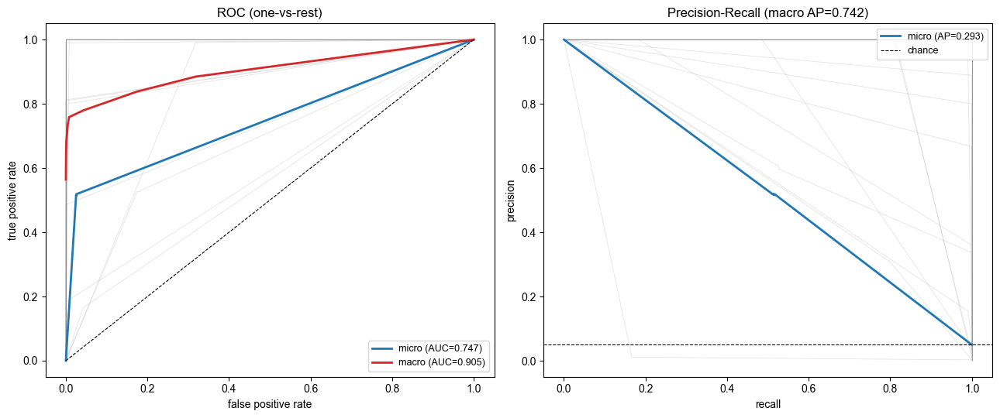
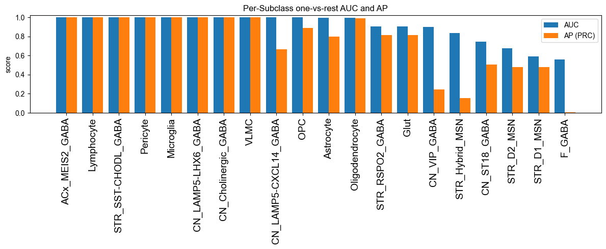
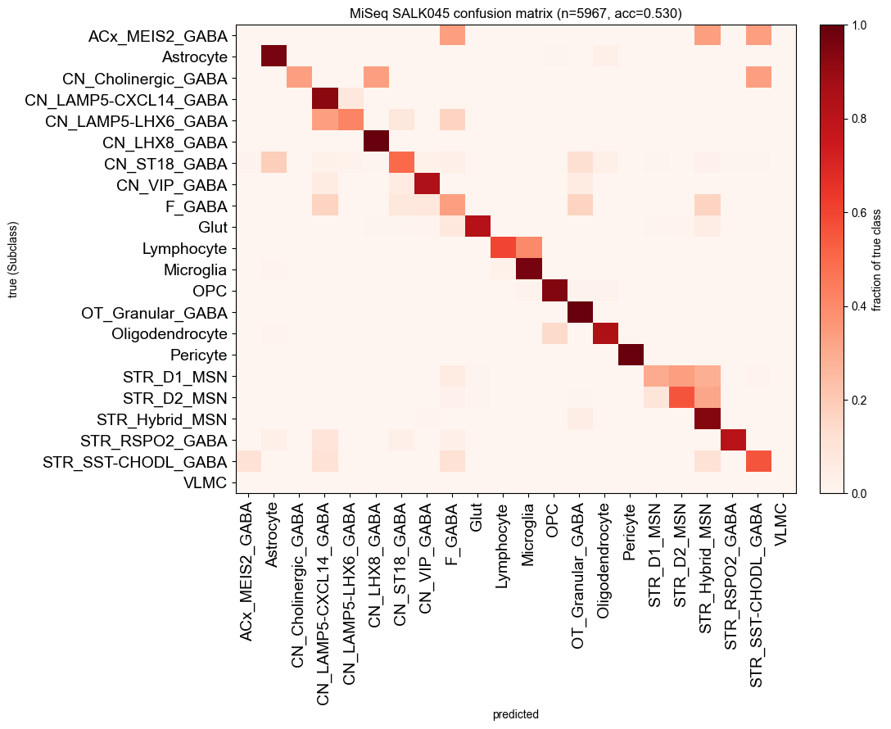
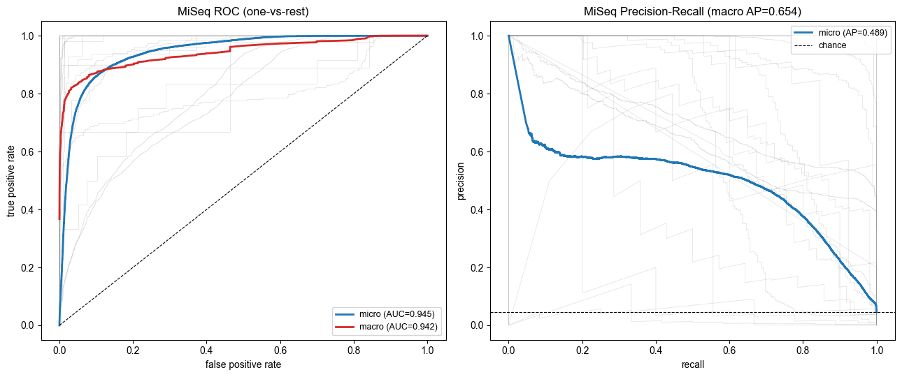
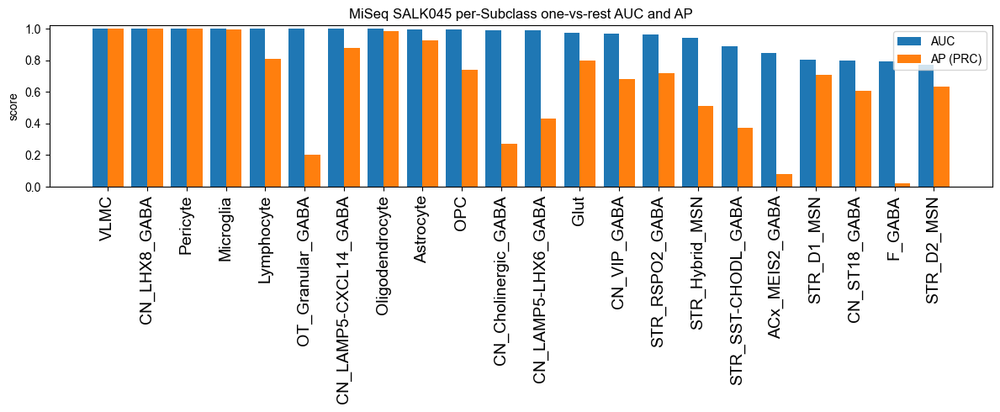

predict_cell_type tutorial — Basal Ganglia Subclass
End-to-end tutorial for cytozip’s methylation cell-type classifier (`predict_cell_type <../cytozip/model.py>`__ / `CellTypeClassifier <../cytozip/model.py>`__) on real Basal Ganglia (BG) Subclass pseudobulks.
What the classifier does
Given a shallow / low-coverage single cell (few reads per cytosine), assign it to one of a panel of deep cell-type pseudobulk references, using a transparent, training-free naive-Bayes / methylation-frequency deconvolution:
For each candidate type
tand cytosinec, estimate a continuous methylation frequency from the pseudobulk with Beta shrinkage \(\theta_{c,t} = (m_{c,t}+\alpha_0)/(n_{c,t}+\alpha_0+\beta_0)\).Score a query cell as the aggregated per-cytosine Bernoulli log-likelihood, in two independent channels (CpG and CpH).
Softmax over types → calibrated probabilities (supports abstention).
Pipeline
stage |
what |
status |
|---|---|---|
|
fit per-type CpG/CpH frequencies from the Subclass pseudobulks → save a reusable model store |
this notebook (run now) |
|
load the trained model, classify query cells |
placeholder — run later |
|
held-out accuracy / macro-F1 / confusion matrix |
placeholder — run later |
|
speed / memory / downsampling sweeps |
placeholder — run later |
The model is saved so that the later
predict_cell_type(..., outdir=OUTDIR)call auto-detects it and skips fitting — no need to re-read the pseudobulks.
1. Setup & imports
[1]:
import os, glob, json, time
import numpy as np
import pandas as pd
import cytozip as czip
from cytozip import CellTypeClassifier, predict_cell_type
print('cytozip', getattr(czip, '__version__', '(dev)'))
cytozip 0.3.9.dev11
2. Configuration (inputs, outputs, hyper-parameters)
``PSEUDOBULK_DIR`` — the
-ssource: a directory of per-cell-type deep pseudobulk.cz(each file’s stem is the cell-type name).``REFERENCE`` — the
-ereference: thebuild_refallc.czsupplying the per-rowcontext(CpG vs CpH split). All pseudobulks are row-aligned to this axis.``OUTDIR`` — where everything (model now, predictions later) is written. The model store goes to
OUTDIR/model(real disk, so a large memmap never spills into a small/RAM/tmp→ SIGBUS).
[ ]:
# --- annotation level to train / predict at -----------------------------
LEVEL = 'Subclass' # classification level: 'Subclass' or 'Class'
# --- inputs -------------------------------------------------------------
PSEUDOBULK_DIR = os.path.expanduser(f'~/Projects/BG/pseudobulk/{LEVEL}/cz') # -s source (per-type .cz)
REFERENCE = os.path.expanduser('~/Ref/hg38/hg38_with_chrL.allc.cz') # -e reference (context axis)
# --- outputs ------------------------------------------------------------
OUTDIR = os.path.expanduser(f'~/Projects/BG/pseudobulk/{LEVEL}/model_{LEVEL}') # Subclass->model_Subclass, Class->model_Class
MODEL_DIR = os.path.join(OUTDIR, 'model') # trained model store (reused by predict)
os.makedirs(OUTDIR, exist_ok=True)
# --- training hyper-parameters -----------------------------------------
LAMBDA_CG = 1.0 # CpG channel log-weight
LAMBDA_CH = 1.0 # CpH channel log-weight (lower it to rebalance if CpH sites dominate)
TOP_CG = None #0.10 # keep top 10% most discriminative CpG sites (None = keep all)
TOP_CH = None #0.05 # keep top 5% most discriminative CpH sites (None = keep all)
N_JOBS = 24 # parallel .cz readers during fit
for p in (PSEUDOBULK_DIR, REFERENCE):
assert os.path.exists(p), f'missing input: {p}'
print('level :', LEVEL)
print('pseudobulk dir :', PSEUDOBULK_DIR)
print('reference :', REFERENCE)
print('output dir :', OUTDIR)
print('model store :', MODEL_DIR)
pseudobulk dir : /home/x-wding2/Projects/BG/pseudobulk/Subclass/cz
reference : /home/x-wding2/Ref/hg38/hg38_with_chrL.allc.cz
output dir : /home/x-wding2/Projects/BG/pseudobulk/Subclass/model
model store : /home/x-wding2/Projects/BG/pseudobulk/Subclass/model/model
3. Inspect the pseudobulk inputs
fit now accepts the directory directly (pseudobulks=PSEUDOBULK_DIR) — each .cz file’s stem becomes the cell-type label, and non-.cz files are ignored. Here we still build the explicit {cell_type: path} mapping just to preview the inputs and to align the cell_counts below.
[3]:
cz_files = sorted(glob.glob(os.path.join(PSEUDOBULK_DIR, '*.cz')))
pseudobulks = {os.path.basename(p)[:-3]: p for p in cz_files} # stem -> path
print(f'{len(pseudobulks)} cell types found:')
for t, p in pseudobulks.items():
print(f' {t:<24s} {os.path.getsize(p)/1e6:8.1f} MB')
32 cell types found:
ACx_MEIS2_GABA 545.5 MB
Astrocyte 2411.0 MB
CN_Cholinergic_GABA 1090.7 MB
CN_GABA-Glut 787.6 MB
CN_LAMP5-CXCL14_GABA 1602.1 MB
CN_LAMP5-LHX6_GABA 950.8 MB
CN_LHX8_GABA 1550.3 MB
CN_MEIS2_GABA 1533.7 MB
CN_ONECUT1_GABA 1064.8 MB
CN_ST18_GABA 2764.8 MB
CN_VIP_GABA 1685.8 MB
Endo 1199.0 MB
F_GABA 2555.0 MB
F_Glut 1814.1 MB
F_M_GATA3_GABA 2737.0 MB
F_M_Glut 2466.5 MB
Glut 2053.7 MB
Lymphocyte 901.9 MB
M_Dopa 1243.5 MB
Microglia 2181.0 MB
OPC 1822.0 MB
OT_Granular_GABA 1260.1 MB
Oligodendrocyte 3265.0 MB
Pericyte 1200.3 MB
SMC 635.7 MB
SN_PAX7_GABA 1209.4 MB
STR_D1_MSN 3573.6 MB
STR_D2_MSN 3547.2 MB
STR_Hybrid_MSN 2857.8 MB
STR_RSPO2_GABA 1358.3 MB
STR_SST-CHODL_GABA 1570.9 MB
VLMC 1220.9 MB
4. (Optional) abundance prior — cell_counts
cell_counts records how many cells belong to each Subclass. It does not affect the fitted frequencies; it is stored on the model and only used at predict time when prior_alpha > 0 (types weighted by \(\pi_t \propto \text{cell\_counts}[t]^{\text{prior\_alpha}}\)).
The true per-Subclass cell counts come from the atlas annotation table ~/Projects/BG/clustering/100kb/annotations.tsv — we take value_counts() on its ``Subclass`` column. Annotation names use spaces while the .cz stems use underscores, so we normalise spaces → underscores before aligning to our cell types. Prediction still defaults to a uniform prior (prior_alpha=0); set USE_ABUNDANCE_PRIOR = True to bake the counts into the model.
[ ]:
USE_ABUNDANCE_PRIOR = False # keep uniform prior by default; set True to bake in the counts
# True per-LEVEL cell counts from the atlas annotation table.
ANNOT_TSV = os.path.expanduser('~/Projects/BG/clustering/100kb/annotations.tsv')
vc = pd.read_csv(ANNOT_TSV, sep='\t', usecols=[LEVEL])[LEVEL].value_counts()
counts_all = {str(name).replace(' ', '_'): int(n) for name, n in vc.items()} # spaces -> underscores
cell_counts = {t: counts_all[t] for t in pseudobulks if t in counts_all}
missing = [t for t in pseudobulks if t not in counts_all]
print(f'{len(vc)} {LEVEL}s in annotations; matched {len(cell_counts)}/{len(pseudobulks)} pseudobulk types')
if missing:
print('unmatched pseudobulk types:', missing)
print('example counts:', dict(list(cell_counts.items())[:5]))
31 Subclasses in annotations; matched 25/32 pseudobulk types
unmatched pseudobulk types: ['ACx_MEIS2_GABA', 'Glut', 'OT_Granular_GABA', 'SN_PAX7_GABA', 'STR_D1_MSN', 'STR_D2_MSN', 'STR_Hybrid_MSN']
example counts: {'Astrocyte': 8829, 'CN_Cholinergic_GABA': 360, 'CN_GABA-Glut': 122, 'CN_LAMP5-CXCL14_GABA': 1315, 'CN_LAMP5-LHX6_GABA': 263}
5. Train — fit the classifier and save the model store
fit reads every pseudobulk .cz once, estimates the per-type CpG/CpH frequencies, keeps the top_cg / top_ch most discriminative sites, and spills the (n_sites x n_types) log-likelihood tables to memory-mappable .npy files. Passing outdir=MODEL_DIR routes that store straight to real disk; save(MODEL_DIR) then writes the meta.json header.
This is the same fitting predict_cell_type does internally — pre-computing it here means the later predict/validation/benchmark calls just load this model and skip fitting.
[5]:
t0 = time.time()
clf = CellTypeClassifier(lambda_cg=LAMBDA_CG, lambda_ch=LAMBDA_CH).fit(
pseudobulks=PSEUDOBULK_DIR, # pass the directory directly (stem = cell type)
reference=REFERENCE, # supplies per-row context (CpG/CpH split)
cell_counts=(cell_counts if USE_ABUNDANCE_PRIOR else None),
top_cg=TOP_CG, top_ch=TOP_CH, # keep only discriminative sites
n_jobs=N_JOBS,
outdir=MODEL_DIR, # memmap store -> real disk (avoids /tmp SIGBUS)
)
clf.save(MODEL_DIR) # write meta.json (arrays already in MODEL_DIR)
print(f'trained {len(clf.cell_types)} cell types in {time.time() - t0:.1f}s')
print('model saved to', MODEL_DIR)
2026-07-29 17:04:05.418 | INFO | cytozip.model:fit:978 - CG: Beta prior alpha0=0.76, beta0=0.1652 (mean=0.821, kappa=0.9252)
2026-07-29 17:04:05.419 | INFO | cytozip.model:fit:982 - CH: Beta prior alpha0=0.1246, beta0=2.625 (mean=0.045, kappa=2.75)
2026-07-29 17:04:06.319 | INFO | cytozip.model:fit:998 - PASS B: scoring cross-type theta range over 32 cell types (58,809,816 CG + 1,141,772,876 CH sites)...
2026-07-29 17:11:55.250 | INFO | cytozip.model:run:916 - PASS B (theta range): 1/32 cell types done
2026-07-29 17:11:55.835 | INFO | cytozip.model:run:916 - PASS B (theta range): 2/32 cell types done
2026-07-29 17:11:55.890 | INFO | cytozip.model:run:916 - PASS B (theta range): 3/32 cell types done
2026-07-29 17:11:55.957 | INFO | cytozip.model:run:916 - PASS B (theta range): 4/32 cell types done
2026-07-29 17:11:56.044 | INFO | cytozip.model:run:916 - PASS B (theta range): 5/32 cell types done
2026-07-29 17:11:56.192 | INFO | cytozip.model:run:916 - PASS B (theta range): 6/32 cell types done
2026-07-29 17:11:56.195 | INFO | cytozip.model:run:916 - PASS B (theta range): 7/32 cell types done
2026-07-29 17:11:56.296 | INFO | cytozip.model:run:916 - PASS B (theta range): 8/32 cell types done
2026-07-29 17:11:56.705 | INFO | cytozip.model:run:916 - PASS B (theta range): 9/32 cell types done
2026-07-29 17:11:57.558 | INFO | cytozip.model:run:916 - PASS B (theta range): 10/32 cell types done
2026-07-29 17:11:57.615 | INFO | cytozip.model:run:916 - PASS B (theta range): 11/32 cell types done
2026-07-29 17:11:57.861 | INFO | cytozip.model:run:916 - PASS B (theta range): 12/32 cell types done
2026-07-29 17:11:57.864 | INFO | cytozip.model:run:916 - PASS B (theta range): 13/32 cell types done
2026-07-29 17:11:57.967 | INFO | cytozip.model:run:916 - PASS B (theta range): 14/32 cell types done
2026-07-29 17:11:58.066 | INFO | cytozip.model:run:916 - PASS B (theta range): 15/32 cell types done
2026-07-29 17:11:58.163 | INFO | cytozip.model:run:916 - PASS B (theta range): 16/32 cell types done
2026-07-29 17:11:58.253 | INFO | cytozip.model:run:916 - PASS B (theta range): 17/32 cell types done
2026-07-29 17:12:00.669 | INFO | cytozip.model:run:916 - PASS B (theta range): 18/32 cell types done
2026-07-29 17:12:00.916 | INFO | cytozip.model:run:916 - PASS B (theta range): 19/32 cell types done
2026-07-29 17:12:00.939 | INFO | cytozip.model:run:916 - PASS B (theta range): 20/32 cell types done
2026-07-29 17:12:00.994 | INFO | cytozip.model:run:916 - PASS B (theta range): 21/32 cell types done
2026-07-29 17:12:01.072 | INFO | cytozip.model:run:916 - PASS B (theta range): 22/32 cell types done
2026-07-29 17:12:01.076 | INFO | cytozip.model:run:916 - PASS B (theta range): 23/32 cell types done
2026-07-29 17:12:01.251 | INFO | cytozip.model:run:916 - PASS B (theta range): 24/32 cell types done
2026-07-29 17:12:01.295 | INFO | cytozip.model:run:916 - PASS B (theta range): 25/32 cell types done
2026-07-29 17:12:01.354 | INFO | cytozip.model:run:916 - PASS B (theta range): 26/32 cell types done
2026-07-29 17:12:01.479 | INFO | cytozip.model:run:916 - PASS B (theta range): 27/32 cell types done
2026-07-29 17:12:01.677 | INFO | cytozip.model:run:916 - PASS B (theta range): 28/32 cell types done
2026-07-29 17:12:01.737 | INFO | cytozip.model:run:916 - PASS B (theta range): 29/32 cell types done
2026-07-29 17:12:02.924 | INFO | cytozip.model:run:916 - PASS B (theta range): 30/32 cell types done
2026-07-29 17:12:02.982 | INFO | cytozip.model:run:916 - PASS B (theta range): 31/32 cell types done
2026-07-29 17:12:03.149 | INFO | cytozip.model:run:916 - PASS B (theta range): 32/32 cell types done
2026-07-29 17:12:03.159 | INFO | cytozip.model:fit:1040 - PASS B done; selecting discriminative sites...
2026-07-29 17:15:55.918 | INFO | cytozip.model:fit:1155 - PASS C: gathering log-theta at 62,958,228 selected sites x 32 cell types...
2026-07-29 17:30:24.751 | INFO | cytozip.model:run:916 - PASS C (gather log-theta): 1/32 cell types done
2026-07-29 17:30:24.893 | INFO | cytozip.model:run:916 - PASS C (gather log-theta): 2/32 cell types done
2026-07-29 17:30:25.272 | INFO | cytozip.model:run:916 - PASS C (gather log-theta): 3/32 cell types done
2026-07-29 17:30:25.276 | INFO | cytozip.model:run:916 - PASS C (gather log-theta): 4/32 cell types done
2026-07-29 17:30:25.510 | INFO | cytozip.model:run:916 - PASS C (gather log-theta): 5/32 cell types done
2026-07-29 17:30:25.511 | INFO | cytozip.model:run:916 - PASS C (gather log-theta): 6/32 cell types done
2026-07-29 17:30:25.511 | INFO | cytozip.model:run:916 - PASS C (gather log-theta): 7/32 cell types done
2026-07-29 17:30:25.514 | INFO | cytozip.model:run:916 - PASS C (gather log-theta): 8/32 cell types done
2026-07-29 17:30:25.515 | INFO | cytozip.model:run:916 - PASS C (gather log-theta): 9/32 cell types done
2026-07-29 17:30:25.515 | INFO | cytozip.model:run:916 - PASS C (gather log-theta): 10/32 cell types done
2026-07-29 17:30:25.515 | INFO | cytozip.model:run:916 - PASS C (gather log-theta): 11/32 cell types done
2026-07-29 17:30:25.618 | INFO | cytozip.model:run:916 - PASS C (gather log-theta): 12/32 cell types done
2026-07-29 17:30:25.619 | INFO | cytozip.model:run:916 - PASS C (gather log-theta): 13/32 cell types done
2026-07-29 17:30:25.619 | INFO | cytozip.model:run:916 - PASS C (gather log-theta): 14/32 cell types done
2026-07-29 17:30:25.620 | INFO | cytozip.model:run:916 - PASS C (gather log-theta): 15/32 cell types done
2026-07-29 17:30:25.621 | INFO | cytozip.model:run:916 - PASS C (gather log-theta): 16/32 cell types done
2026-07-29 17:30:25.622 | INFO | cytozip.model:run:916 - PASS C (gather log-theta): 17/32 cell types done
2026-07-29 17:30:25.698 | INFO | cytozip.model:run:916 - PASS C (gather log-theta): 18/32 cell types done
2026-07-29 17:30:25.699 | INFO | cytozip.model:run:916 - PASS C (gather log-theta): 19/32 cell types done
2026-07-29 17:30:25.699 | INFO | cytozip.model:run:916 - PASS C (gather log-theta): 20/32 cell types done
2026-07-29 17:30:25.699 | INFO | cytozip.model:run:916 - PASS C (gather log-theta): 21/32 cell types done
2026-07-29 17:30:25.775 | INFO | cytozip.model:run:916 - PASS C (gather log-theta): 22/32 cell types done
2026-07-29 17:30:25.776 | INFO | cytozip.model:run:916 - PASS C (gather log-theta): 23/32 cell types done
2026-07-29 17:30:25.777 | INFO | cytozip.model:run:916 - PASS C (gather log-theta): 24/32 cell types done
2026-07-29 17:30:25.777 | INFO | cytozip.model:run:916 - PASS C (gather log-theta): 25/32 cell types done
2026-07-29 17:30:25.779 | INFO | cytozip.model:run:916 - PASS C (gather log-theta): 26/32 cell types done
2026-07-29 17:30:25.780 | INFO | cytozip.model:run:916 - PASS C (gather log-theta): 27/32 cell types done
2026-07-29 17:30:25.781 | INFO | cytozip.model:run:916 - PASS C (gather log-theta): 28/32 cell types done
2026-07-29 17:30:25.784 | INFO | cytozip.model:run:916 - PASS C (gather log-theta): 29/32 cell types done
2026-07-29 17:30:25.786 | INFO | cytozip.model:run:916 - PASS C (gather log-theta): 30/32 cell types done
2026-07-29 17:30:25.786 | INFO | cytozip.model:run:916 - PASS C (gather log-theta): 31/32 cell types done
2026-07-29 17:30:25.788 | INFO | cytozip.model:run:916 - PASS C (gather log-theta): 32/32 cell types done
2026-07-29 17:30:25.802 | INFO | cytozip.model:fit:1160 - PASS C done; flushing model store to disk...
2026-07-29 17:30:25.822 | INFO | cytozip.model:fit:1178 - CG: 58,809,816 context sites -> 5,876,341 discriminative sites across 32 cell types in 24 chunks
2026-07-29 17:30:25.823 | INFO | cytozip.model:fit:1182 - CH: 1,141,772,876 context sites -> 57,081,887 discriminative sites across 32 cell types in 24 chunks
2026-07-29 17:30:25.823 | WARNING | cytozip.model:fit:1191 - model keeps 62,958,228 sites x 32 types (~16.1 GB of log-theta). Pass top_cg/top_ch (e.g. top_cg=20000) or min_range_cg/min_range_ch (>0) to select fewer discriminative sites and cut memory drastically.
2026-07-29 17:30:25.946 | INFO | cytozip.model:save:2138 - saved CellTypeClassifier to /home/x-wding2/Projects/BG/pseudobulk/Subclass/model/model
trained 32 cell types in 2227.4s
model saved to /home/x-wding2/Projects/BG/pseudobulk/Subclass/model/model
6. Inspect the trained model
Confirm what fit selected and the on-disk footprint of the reusable store.
[6]:
meta = json.load(open(os.path.join(MODEL_DIR, 'meta.json')))
print('cell types :', len(meta['cell_types']))
print('CpG sites kept :', meta['cg']['n_sites'] if meta['cg'] else 0)
print('CpH sites kept :', meta['ch']['n_sites'] if meta['ch'] else 0)
print('alpha0/beta0 CG :', meta['alpha0_cg'], '/', meta['beta0_cg'])
print('alpha0/beta0 CH :', meta['alpha0_ch'], '/', meta['beta0_ch'])
store_size = sum(os.path.getsize(os.path.join(MODEL_DIR, f)) for f in os.listdir(MODEL_DIR))
print('model store size: %.1f MB' % (store_size / 1e6))
print('files :', sorted(os.listdir(MODEL_DIR)))
cell types : 32
CpG sites kept : 5876341
CpH sites kept : 57081887
alpha0/beta0 CG : 0.7600007373931021 / 0.16517915238047134
alpha0/beta0 CH : 0.12458260023888149 / 2.6251302249570063
model store size: 16369.1 MB
files : ['cg_log1m_theta.npy', 'cg_log_theta.npy', 'cg_sites.npy', 'ch_log1m_theta.npy', 'ch_log_theta.npy', 'ch_sites.npy', 'meta.json']
7. Predict for single-cell cz (deep sequencing using snm3C-seq)
Do not run yet. Once the query cells are ready, predict_cell_type will detect the trained model under OUTDIR/model and skip fitting, then write predictions.csv + predict_proba.csv to OUTDIR. query can be a directory of single-cell .cz, a concatenated multi-cell .cz, a {cell_id: path} dict, or a 2-column [cell_id, cz_path] table.
labels, proba = predict_cell_type(
query=QUERY, # <- to be provided
outdir=OUTDIR, # reuses OUTDIR/model, writes predictions.csv + predict_proba.csv
reference=REFERENCE, # only used if the model has to be re-fit
prior_alpha=0.0, # uniform prior; raise to use the abundance prior
abstain_threshold=None, # e.g. 0.6 to abstain on low-confidence cells
n_jobs=N_JOBS,
)
[ ]:
# --- query cells: 2000 single-cell .cz ----------------------------------
QUERY_DIR = os.path.expanduser('~/Projects/test_cytozip/benchmark/cz')
assert os.path.isdir(QUERY_DIR), f'missing query dir: {QUERY_DIR}'
n_query = len(glob.glob(os.path.join(QUERY_DIR, '*.cz')))
print(f'{n_query} query .cz cells in {QUERY_DIR}')
# The model under OUTDIR/model is reused (fit is skipped); a directory query
# -> batch predict, returning (labels, proba) and writing them to OUTDIR.
t0 = time.time()
labels, proba = predict_cell_type(
query=QUERY_DIR,
outdir=OUTDIR, # reuses OUTDIR/model
prefix='m3c_', # -> OUTDIR/m3c_predictions.csv + m3c_predict_proba.csv
reference=REFERENCE, # only used if the model must be re-fit
prior_alpha=0.0, # uniform prior
n_jobs=N_JOBS,
)
print(f'predicted {len(labels)} cells in {time.time() - t0:.1f}s')
print('confidence: mean=%.3f median=%.3f' % (labels['confidence'].mean(),
labels['confidence'].median()))
labels.head()
2026-07-29 19:21:46.290 | INFO | cytozip.model:predict_cell_type:2274 - found existing model at /home/x-wding2/Projects/BG/pseudobulk/Subclass/model/model; skipping fit and loading it
2000 query .cz cells in /home/x-wding2/Projects/test_cytozip/benchmark/cz
2026-07-29 20:06:31.940 | INFO | cytozip.model:predict_cell_type:2326 - wrote predictions to /home/x-wding2/Projects/BG/pseudobulk/Subclass/model
predicted 2000 cells in 2686.1s
confidence: mean=1.000 median=1.000
| label | confidence | |
|---|---|---|
| cell_id | ||
| UWA7648_CX1819_NAC_1_P1-1-I3-A1 | STR_D2_MSN | 1.0 |
| UWA7648_CX1819_NAC_1_P1-1-I3-A10 | STR_D2_MSN | 1.0 |
| UWA7648_CX1819_NAC_1_P1-1-I3-A11 | STR_D2_MSN | 1.0 |
| UWA7648_CX1819_NAC_1_P1-1-I3-A12 | STR_Hybrid_MSN | 1.0 |
| UWA7648_CX1819_NAC_1_P1-1-I3-A14 | STR_D2_MSN | 1.0 |
8. Validation
Do not run yet. Evaluate the classifier on cells with known labels (e.g. held-out single cells or downsampled pseudobulks): overall accuracy, macro-F1 (fair to rare types), and the confusion matrix. To be filled in when the labelled query set is provided.
[ ]:
from sklearn.metrics import (accuracy_score, f1_score, confusion_matrix,
roc_auc_score, average_precision_score,
roc_curve, precision_recall_curve, auc)
from sklearn.preprocessing import label_binarize
META_TSV = os.path.expanduser('~/Projects/BG/clustering/100kb/cell_metadata_with_annotation.tsv')
# read only the cell-id column (first) + LEVEL, keyed by cell id
_id_col = pd.read_csv(META_TSV, sep='\t', nrows=1).columns[0]
meta = pd.read_csv(META_TSV, sep='\t', usecols=[_id_col, LEVEL],
dtype=str).set_index(_id_col)
matched = labels.index.isin(meta.index).sum()
print(f"metadata id column: {_id_col!r}; {matched}/{len(labels)} query cells matched")
# true labels aligned to predictions; spaces -> underscores to match model classes
y_true_all = (meta[LEVEL].reindex(labels.index)
.str.replace(' ', '_', regex=False))
model_classes = list(proba.columns)
mask = y_true_all.notna() & y_true_all.isin(model_classes)
n_out = int((y_true_all.notna() & ~y_true_all.isin(model_classes)).sum())
print(f'{int(mask.sum())}/{len(labels)} cells evaluable '
f'(labelled & label in the {len(model_classes)} model classes); '
f'{n_out} labelled but outside model, {int(y_true_all.isna().sum())} unlabelled')
y_true = y_true_all[mask]
y_pred = labels.loc[mask, 'label']
present = [c for c in model_classes if (y_true == c).any()] # classes actually seen
P = proba.loc[mask, present]
Yb = label_binarize(y_true, classes=present)
Pp = P.values
# ---- headline metrics --------------------------------------------------
acc = accuracy_score(y_true, y_pred)
f1_macro = f1_score(y_true, y_pred, labels=present, average='macro', zero_division=0)
f1_micro = f1_score(y_true, y_pred, labels=present, average='micro', zero_division=0)
auc_macro = roc_auc_score(Yb, Pp, average='macro')
auc_micro = roc_auc_score(Yb, Pp, average='micro')
ap_macro = average_precision_score(Yb, Pp, average='macro')
ap_micro = average_precision_score(Yb, Pp, average='micro')
print('\n=== overall ===')
print(f'evaluated cells : {len(y_true)} classes seen: {len(present)}/{len(model_classes)}')
print(f'accuracy : {acc:.4f}')
print(f'F1 macro / micro: {f1_macro:.4f} / {f1_micro:.4f}')
print(f'AUC macro / micro: {auc_macro:.4f} / {auc_micro:.4f}')
print(f'AP macro / micro: {ap_macro:.4f} / {ap_micro:.4f} (PRC)')
FIG_DIR = os.path.join(OUTDIR, 'validation')
os.makedirs(FIG_DIR, exist_ok=True)
metadata id column: 'cell'; 1927/2000 query cells matched
1927/2000 cells evaluable (labelled & label in the 32 model classes); 0 labelled but outside model, 73 unlabelled
=== overall ===
evaluated cells : 1927 classes seen: 20/32
accuracy : 0.5112
F1 macro / micro: 0.7826 / 0.5149
AUC macro / micro: 0.9053 / 0.7465
AP macro / micro: 0.7420 / 0.2933 (PRC)
[ ]:
# --- row-normalised confusion matrix ------------------------------------
import matplotlib.pyplot as plt
import matplotlib as mpl
mpl.rcParams['pdf.fonttype'] = 42
try:
mpl.rcParams['font.family'] = 'Arial'
except Exception:
pass
cm = confusion_matrix(y_true, y_pred, labels=present)
cmn = cm / cm.sum(axis=1, keepdims=True).clip(min=1)
fig, ax = plt.subplots(figsize=(11, 9))
im = ax.imshow(cmn, cmap='Reds', vmin=0, vmax=1, aspect='auto')
ax.set_xticks(range(len(present))); ax.set_xticklabels(present, rotation=90, fontsize=14)
ax.set_yticks(range(len(present))); ax.set_yticklabels(present, fontsize=14)
ax.set_xlabel('predicted'); ax.set_ylabel(f'true ({LEVEL})')
ax.set_title(f'Row-normalised confusion matrix (n={len(y_true)}, acc={acc:.3f})')
fig.colorbar(im, ax=ax, fraction=0.046, pad=0.04, label='fraction of true class')
fig.tight_layout()
fig.savefig(os.path.join(FIG_DIR, 'm3c_confusion_matrix.pdf'))
plt.show()

[ ]:
# --- ROC and Precision-Recall curves (one-vs-rest) ----------------------
n_cls = len(present)
fpr, tpr, roc_auc = {}, {}, {}
prec, rec, ap = {}, {}, {}
for i in range(n_cls):
fpr[i], tpr[i], _ = roc_curve(Yb[:, i], Pp[:, i])
roc_auc[i] = auc(fpr[i], tpr[i])
prec[i], rec[i], _ = precision_recall_curve(Yb[:, i], Pp[:, i])
ap[i] = average_precision_score(Yb[:, i], Pp[:, i])
fpr_mi, tpr_mi, _ = roc_curve(Yb.ravel(), Pp.ravel()) # micro-average
prec_mi, rec_mi, _ = precision_recall_curve(Yb.ravel(), Pp.ravel())
all_fpr = np.unique(np.concatenate([fpr[i] for i in range(n_cls)]))
mean_tpr = np.mean([np.interp(all_fpr, fpr[i], tpr[i]) for i in range(n_cls)], axis=0)
fig, (ax1, ax2) = plt.subplots(1, 2, figsize=(13, 5.5))
for i in range(n_cls):
ax1.plot(fpr[i], tpr[i], lw=0.5, alpha=0.25, color='gray')
ax1.plot(fpr_mi, tpr_mi, lw=2, color='C0', label=f'micro (AUC={auc_micro:.3f})')
ax1.plot(all_fpr, mean_tpr, lw=2, color='C3', label=f'macro (AUC={auc_macro:.3f})')
ax1.plot([0, 1], [0, 1], ls='--', color='k', lw=0.8)
ax1.set_xlabel('false positive rate'); ax1.set_ylabel('true positive rate')
ax1.set_title('ROC (one-vs-rest)'); ax1.legend(loc='lower right', fontsize=9)
for i in range(n_cls):
ax2.plot(rec[i], prec[i], lw=0.5, alpha=0.25, color='gray')
ax2.plot(rec_mi, prec_mi, lw=2, color='C0', label=f'micro (AP={ap_micro:.3f})')
ax2.axhline(Yb.mean(), ls='--', color='k', lw=0.8, label='chance')
ax2.set_xlabel('recall'); ax2.set_ylabel('precision')
ax2.set_title(f'Precision-Recall (macro AP={ap_macro:.3f})')
ax2.legend(loc='upper right', fontsize=9)
fig.tight_layout()
fig.savefig(os.path.join(FIG_DIR, 'm3c_roc_pr_curves.pdf'))
plt.show()

[ ]:
# --- per-LEVEL one-vs-rest AUC / AP bars --------------------------------
support = pd.Series(y_true).value_counts().reindex(present).fillna(0).astype(int)
per = pd.DataFrame({
'AUC': [roc_auc[i] for i in range(n_cls)],
'AP': [ap[i] for i in range(n_cls)],
'support': support.values,
}, index=present).sort_values('AUC', ascending=False)
fig, ax = plt.subplots(figsize=(12, 5))
x = np.arange(len(per))
ax.bar(x - 0.2, per['AUC'], width=0.4, label='AUC', color='C0')
ax.bar(x + 0.2, per['AP'], width=0.4, label='AP (PRC)', color='C1')
ax.set_xticks(x); ax.set_xticklabels(per.index, rotation=90, fontsize=14)
ax.set_ylim(0, 1.02); ax.set_ylabel('score')
ax.set_title(f'Per-{LEVEL} one-vs-rest AUC and AP')
ax.legend()
fig.tight_layout()
fig.savefig(os.path.join(FIG_DIR, 'm3c_per_class_auc_ap.pdf'))
plt.show()
per.round(4)

| AUC | AP | support | |
|---|---|---|---|
| ACx_MEIS2_GABA | 1.0000 | 1.0000 | 1 |
| Lymphocyte | 1.0000 | 1.0000 | 2 |
| STR_SST-CHODL_GABA | 1.0000 | 1.0000 | 3 |
| Pericyte | 1.0000 | 1.0000 | 1 |
| Microglia | 1.0000 | 1.0000 | 46 |
| CN_LAMP5-LHX6_GABA | 1.0000 | 1.0000 | 5 |
| CN_Cholinergic_GABA | 1.0000 | 1.0000 | 4 |
| VLMC | 1.0000 | 1.0000 | 1 |
| CN_LAMP5-CXCL14_GABA | 0.9997 | 0.6667 | 2 |
| OPC | 0.9995 | 0.8889 | 16 |
| Astrocyte | 0.9960 | 0.8000 | 60 |
| Oligodendrocyte | 0.9949 | 0.9909 | 197 |
| STR_RSPO2_GABA | 0.9062 | 0.8141 | 16 |
| Glut | 0.9048 | 0.8137 | 42 |
| CN_VIP_GABA | 0.8977 | 0.2467 | 5 |
| STR_Hybrid_MSN | 0.8360 | 0.1536 | 107 |
| CN_ST18_GABA | 0.7429 | 0.5044 | 70 |
| STR_D2_MSN | 0.6755 | 0.4791 | 649 |
| STR_D1_MSN | 0.5915 | 0.4772 | 694 |
| F_GABA | 0.5613 | 0.0046 | 6 |
9. NEXT — Benchmark (run later)
Do not run yet. Measure runtime / peak memory and sweep robustness knobs (max_query_cg / max_query_ch downsampling, top_cg / top_ch, lambda_ch, prior_alpha) against accuracy. To be filled in after validation.
10. Predict & validate on MiSeq cells (SALK045)
Same trained model, a different query set: shallow MiSeq single cells from SALK045. We reuse the model under OUTDIR/model (symlinked into a separate OUTDIR/miseq_SALK045 so fitting is skipped and the deep-cell predictions above are not overwritten), classify the MiSeq .cz, then score them against the same META_TSV Subclass labels and redraw the confusion matrix, ROC/PR curves and per-Subclass AUC/AP bars.
[ ]:
# --- MiSeq query cells: SALK045 single-cell .cz -------------------------
MISEQ_QUERY_DIR = os.path.expanduser('~/Projects/test_cytozip/miseq/SALK045/cz/')
assert os.path.isdir(MISEQ_QUERY_DIR), f'missing query dir: {MISEQ_QUERY_DIR}'
n_miseq = len(glob.glob(os.path.join(MISEQ_QUERY_DIR, '*.cz')))
print(f'{n_miseq} MiSeq .cz cells in {MISEQ_QUERY_DIR}')
# separate outdir so MiSeq predictions don't overwrite the deep-cell ones;
# symlink the trained model in so fitting is skipped (model store reused).
MISEQ_OUTDIR = os.path.join(OUTDIR, 'miseq_SALK045')
os.makedirs(MISEQ_OUTDIR, exist_ok=True)
_miseq_model = os.path.join(MISEQ_OUTDIR, 'model')
if not os.path.exists(_miseq_model):
os.symlink(MODEL_DIR, _miseq_model)
t0 = time.time()
labels_ms, proba_ms = predict_cell_type(
query=MISEQ_QUERY_DIR,
outdir=MISEQ_OUTDIR, # reuses OUTDIR/model
prefix='miseq_', # -> MISEQ_OUTDIR/miseq_predictions.csv + miseq_predict_proba.csv
reference=REFERENCE, # only used if the model must be re-fit
prior_alpha=0.0, # uniform prior
n_jobs=N_JOBS,
)
print(f'predicted {len(labels_ms)} MiSeq cells in {time.time() - t0:.1f}s')
print('confidence: mean=%.3f median=%.3f' % (labels_ms['confidence'].mean(),
labels_ms['confidence'].median()))
labels_ms.head()
2026-07-30 10:33:00.342 | INFO | cytozip.model:predict_cell_type:2397 - found existing model at /home/x-wding2/Projects/BG/pseudobulk/Subclass/model/miseq_SALK045/model; skipping fit and loading it
2026-07-30 10:33:00.342 | INFO | cytozip.model:predict_cell_type:2397 - found existing model at /home/x-wding2/Projects/BG/pseudobulk/Subclass/model/miseq_SALK045/model; skipping fit and loading it
6126 MiSeq .cz cells in /home/x-wding2/Projects/test_cytozip/miseq/SALK045/cz/
2026-07-30 10:33:00.342 | INFO | cytozip.model:predict_cell_type:2397 - found existing model at /home/x-wding2/Projects/BG/pseudobulk/Subclass/model/miseq_SALK045/model; skipping fit and loading it
6126 MiSeq .cz cells in /home/x-wding2/Projects/test_cytozip/miseq/SALK045/cz/
2026-07-30 13:27:30.626 | INFO | cytozip.model:predict_cell_type:2437 - wrote predictions to /home/x-wding2/Projects/BG/pseudobulk/Subclass/model/miseq_SALK045
2026-07-30 10:33:00.342 | INFO | cytozip.model:predict_cell_type:2397 - found existing model at /home/x-wding2/Projects/BG/pseudobulk/Subclass/model/miseq_SALK045/model; skipping fit and loading it
6126 MiSeq .cz cells in /home/x-wding2/Projects/test_cytozip/miseq/SALK045/cz/
2026-07-30 13:27:30.626 | INFO | cytozip.model:predict_cell_type:2437 - wrote predictions to /home/x-wding2/Projects/BG/pseudobulk/Subclass/model/miseq_SALK045
predicted 6126 MiSeq cells in 10470.7s
confidence: mean=0.917 median=0.998
| label | confidence | |
|---|---|---|
| cell_id | ||
| UWA7648_CX1819_NAC_1_P1-1-I3-A1 | STR_D1_MSN | 0.988481 |
| UWA7648_CX1819_NAC_1_P1-1-I3-A13 | STR_D2_MSN | 0.997046 |
| UWA7648_CX1819_NAC_1_P1-1-I3-A14 | STR_D1_MSN | 0.998993 |
| UWA7648_CX1819_NAC_1_P1-1-I3-A2 | STR_D1_MSN | 0.908375 |
| UWA7648_CX1819_NAC_1_P1-1-I3-B1 | OPC | 0.858020 |
[ ]:
from sklearn.metrics import (accuracy_score, f1_score, confusion_matrix,
roc_auc_score, average_precision_score,
roc_curve, precision_recall_curve, auc)
from sklearn.preprocessing import label_binarize
import matplotlib.pyplot as plt
import matplotlib as mpl
mpl.rcParams['pdf.fonttype'] = 42
try:
mpl.rcParams['font.family'] = 'Arial'
except Exception:
pass
# --- validate MiSeq predictions against the same META_TSV LEVEL labels ---
META_TSV = os.path.expanduser('~/Projects/BG/clustering/100kb/cell_metadata_with_annotation.tsv')
_id_col = pd.read_csv(META_TSV, sep='\t', nrows=1).columns[0]
meta = pd.read_csv(META_TSV, sep='\t', usecols=[_id_col, LEVEL],
dtype=str).set_index(_id_col)
from cemba_data.mapping.stats import m3c_additional_cols, get_plate_info
plate_info=get_plate_info(meta.index,barcode_version='V2')
for col in plate_info:
meta[col]=plate_info[col]
meta['real_multiplex_group'] = meta.RandomIndex.apply(
lambda x: ((int(x[1:]) - 1) % 12) // 2 + 1 if 'unknow' not in x.lower() else 'NA'
)
meta['uid'] = meta.Plate.map(str) + '-' + meta.real_multiplex_group.map(str) + '-' + meta.PCRIndex.map(str)
meta['new_cell_id']=meta.uid.map(str)+'-'+meta.RandomIndex.map(str)
meta.index=meta.new_cell_id.tolist()
matched = labels_ms.index.isin(meta.index).sum()
print(f"metadata id column: {_id_col!r}; {matched}/{len(labels_ms)} MiSeq cells matched")
y_true_all = (meta[LEVEL].reindex(labels_ms.index)
.str.replace(' ', '_', regex=False))
model_classes = list(proba_ms.columns)
mask = y_true_all.notna() & y_true_all.isin(model_classes)
n_out = int((y_true_all.notna() & ~y_true_all.isin(model_classes)).sum())
print(f'{int(mask.sum())}/{len(labels_ms)} cells evaluable '
f'(labelled & label in the {len(model_classes)} model classes); '
f'{n_out} labelled but outside model, {int(y_true_all.isna().sum())} unlabelled')
y_true = y_true_all[mask]
y_pred = labels_ms.loc[mask, 'label']
present = [c for c in model_classes if (y_true == c).any()]
P = proba_ms.loc[mask, present]
Yb = label_binarize(y_true, classes=present)
Pp = P.values
acc = accuracy_score(y_true, y_pred)
f1_macro = f1_score(y_true, y_pred, labels=present, average='macro', zero_division=0)
f1_micro = f1_score(y_true, y_pred, labels=present, average='micro', zero_division=0)
auc_macro = roc_auc_score(Yb, Pp, average='macro')
auc_micro = roc_auc_score(Yb, Pp, average='micro')
ap_macro = average_precision_score(Yb, Pp, average='macro')
ap_micro = average_precision_score(Yb, Pp, average='micro')
print(f'\n=== MiSeq SALK045 overall ({LEVEL}) ===')
print(f'evaluated cells : {len(y_true)} classes seen: {len(present)}/{len(model_classes)}')
print(f'accuracy : {acc:.4f}')
print(f'F1 macro / micro: {f1_macro:.4f} / {f1_micro:.4f}')
print(f'AUC macro / micro: {auc_macro:.4f} / {auc_micro:.4f}')
print(f'AP macro / micro: {ap_macro:.4f} / {ap_micro:.4f} (PRC)')
FIG_DIR = os.path.join(MISEQ_OUTDIR, 'validation')
os.makedirs(FIG_DIR, exist_ok=True)
metadata id column: 'cell'; 5967/6126 MiSeq cells matched
5967/6126 cells evaluable (labelled & label in the 32 model classes); 0 labelled but outside model, 159 unlabelled
=== MiSeq SALK045 overall ===
evaluated cells : 5967 classes seen: 22/32
accuracy : 0.5304
F1 macro / micro: 0.4710 / 0.5332
AUC macro / micro: 0.9420 / 0.9450
AP macro / micro: 0.6537 / 0.4888 (PRC)
[ ]:
# --- MiSeq row-normalised confusion matrix ------------------------------
cm = confusion_matrix(y_true, y_pred, labels=present)
cmn = cm / cm.sum(axis=1, keepdims=True).clip(min=1)
fig, ax = plt.subplots(figsize=(11, 9))
im = ax.imshow(cmn, cmap='Reds', vmin=0, vmax=1, aspect='auto')
ax.set_xticks(range(len(present))); ax.set_xticklabels(present, rotation=90, fontsize=14)
ax.set_yticks(range(len(present))); ax.set_yticklabels(present, fontsize=14)
ax.set_xlabel('predicted'); ax.set_ylabel(f'true ({LEVEL})')
ax.set_title(f'MiSeq SALK045 confusion matrix ({LEVEL}, n={len(y_true)}, acc={acc:.3f})')
fig.colorbar(im, ax=ax, fraction=0.046, pad=0.04, label='fraction of true class')
fig.tight_layout()
fig.savefig(os.path.join(FIG_DIR, 'miseq_confusion_matrix.pdf'))
plt.show()

[ ]:
# --- MiSeq ROC and Precision-Recall curves (one-vs-rest) ----------------
n_cls = len(present)
fpr, tpr, roc_auc = {}, {}, {}
prec, rec, ap = {}, {}, {}
for i in range(n_cls):
fpr[i], tpr[i], _ = roc_curve(Yb[:, i], Pp[:, i])
roc_auc[i] = auc(fpr[i], tpr[i])
prec[i], rec[i], _ = precision_recall_curve(Yb[:, i], Pp[:, i])
ap[i] = average_precision_score(Yb[:, i], Pp[:, i])
fpr_mi, tpr_mi, _ = roc_curve(Yb.ravel(), Pp.ravel())
prec_mi, rec_mi, _ = precision_recall_curve(Yb.ravel(), Pp.ravel())
all_fpr = np.unique(np.concatenate([fpr[i] for i in range(n_cls)]))
mean_tpr = np.mean([np.interp(all_fpr, fpr[i], tpr[i]) for i in range(n_cls)], axis=0)
fig, (ax1, ax2) = plt.subplots(1, 2, figsize=(13, 5.5))
for i in range(n_cls):
ax1.plot(fpr[i], tpr[i], lw=0.5, alpha=0.25, color='gray')
ax1.plot(fpr_mi, tpr_mi, lw=2, color='C0', label=f'micro (AUC={auc_micro:.3f})')
ax1.plot(all_fpr, mean_tpr, lw=2, color='C3', label=f'macro (AUC={auc_macro:.3f})')
ax1.plot([0, 1], [0, 1], ls='--', color='k', lw=0.8)
ax1.set_xlabel('false positive rate'); ax1.set_ylabel('true positive rate')
ax1.set_title('MiSeq ROC (one-vs-rest)'); ax1.legend(loc='lower right', fontsize=9)
for i in range(n_cls):
ax2.plot(rec[i], prec[i], lw=0.5, alpha=0.25, color='gray')
ax2.plot(rec_mi, prec_mi, lw=2, color='C0', label=f'micro (AP={ap_micro:.3f})')
ax2.axhline(Yb.mean(), ls='--', color='k', lw=0.8, label='chance')
ax2.set_xlabel('recall'); ax2.set_ylabel('precision')
ax2.set_title(f'MiSeq Precision-Recall (macro AP={ap_macro:.3f})')
ax2.legend(loc='upper right', fontsize=9)
fig.tight_layout()
fig.savefig(os.path.join(FIG_DIR, 'miseq_roc_pr_curves.pdf'))
plt.show()

[ ]:
# --- MiSeq per-LEVEL one-vs-rest AUC / AP bars --------------------------
support = pd.Series(y_true).value_counts().reindex(present).fillna(0).astype(int)
per = pd.DataFrame({
'AUC': [roc_auc[i] for i in range(n_cls)],
'AP': [ap[i] for i in range(n_cls)],
'support': support.values,
}, index=present).sort_values('AUC', ascending=False)
fig, ax = plt.subplots(figsize=(12, 5))
x = np.arange(len(per))
ax.bar(x - 0.2, per['AUC'], width=0.4, label='AUC', color='C0')
ax.bar(x + 0.2, per['AP'], width=0.4, label='AP (PRC)', color='C1')
ax.set_xticks(x); ax.set_xticklabels(per.index, rotation=90, fontsize=14)
ax.set_ylim(0, 1.02); ax.set_ylabel('score')
ax.set_title(f'MiSeq SALK045 per-{LEVEL} one-vs-rest AUC and AP')
ax.legend()
fig.tight_layout()
fig.savefig(os.path.join(FIG_DIR, 'miseq_per_class_auc_ap.pdf'))
plt.show()
per.round(4)

| AUC | AP | support | |
|---|---|---|---|
| VLMC | 1.0000 | 1.0000 | 1 |
| CN_LHX8_GABA | 1.0000 | 1.0000 | 1 |
| Pericyte | 1.0000 | 1.0000 | 1 |
| Microglia | 0.9999 | 0.9964 | 123 |
| Lymphocyte | 0.9997 | 0.8111 | 5 |
| OT_Granular_GABA | 0.9997 | 0.2000 | 1 |
| CN_LAMP5-CXCL14_GABA | 0.9992 | 0.8803 | 13 |
| Oligodendrocyte | 0.9984 | 0.9842 | 549 |
| Astrocyte | 0.9977 | 0.9276 | 184 |
| OPC | 0.9948 | 0.7405 | 54 |
| CN_Cholinergic_GABA | 0.9926 | 0.2718 | 5 |
| CN_LAMP5-LHX6_GABA | 0.9909 | 0.4316 | 14 |
| Glut | 0.9729 | 0.8010 | 153 |
| CN_VIP_GABA | 0.9703 | 0.6820 | 20 |
| STR_RSPO2_GABA | 0.9620 | 0.7199 | 49 |
| STR_Hybrid_MSN | 0.9445 | 0.5113 | 327 |
| STR_SST-CHODL_GABA | 0.8910 | 0.3737 | 9 |
| ACx_MEIS2_GABA | 0.8439 | 0.0783 | 3 |
| STR_D1_MSN | 0.8028 | 0.7059 | 2274 |
| CN_ST18_GABA | 0.7977 | 0.6070 | 192 |
| F_GABA | 0.7958 | 0.0223 | 12 |
| STR_D2_MSN | 0.7713 | 0.6356 | 1977 |